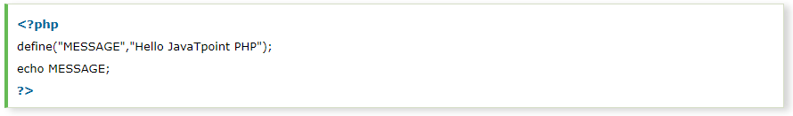
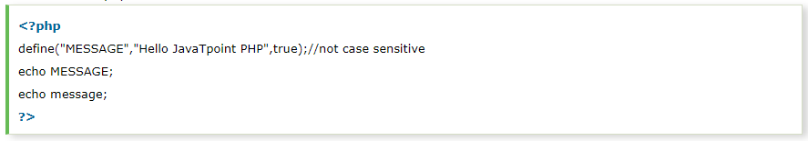
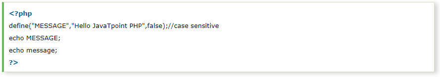
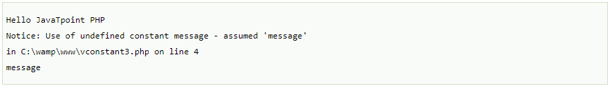
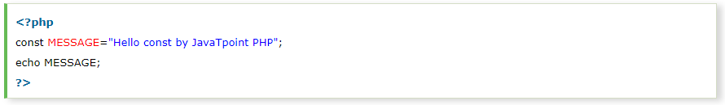

PHP constants are name or identifier that can't be changed during the execution of the script. PHP constants can be defined by 2 ways:
PHP constants follow the same PHP variable rules. For example, it can be started with letter or underscore only.
Conventionally, PHP constants should be defined in uppercase letters.
Let's see the syntax of define() function in PHP.
Let's see the example to define PHP constant using define().
File: constant1.php
Output:
File: constant2.php
Output:
File: constant3.php
Output:
The const keyword defines constants at compile time. It is a language construct not a function.
It is bit faster than define().
It is always case sensitive.
File: constant4.php
Output